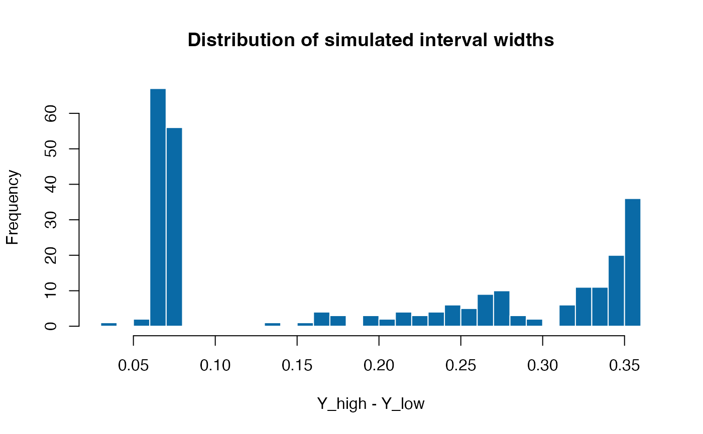

vignettes/simulate-interval-beta.Rmd
simulate-interval-beta.RmdThe simulation_DATA.beta() helper produces
beta-regression design matrices paired with either fully observed
responses or interval-censored outcomes. This vignette illustrates a
typical workflow for drawing a single data set with structured
correlation and custom missingness behaviour that mimics practical
survey settings.
We simulate 300 observations with 10 candidate predictors. Four
predictors are truly associated with the response through coefficients
specified in beta_size. Correlation among predictors
follows an AR(1) structure governed by rho, which
conveniently induces near-multicollinearity while remaining
positive-definite.
sim <- simulation_DATA.beta(
n = 300, p = 10, s = 4, beta_size = c(1.0, -0.8, 0.6, -0.5),
corr = "ar1", rho = 0.25,
mechanism = "mixed", mix_prob = 0.5,
delta = function(mu, X) 0.03 + 0.02 * abs(mu - 0.5),
alpha = function(mu, X) 0.1 + 0.05 * (mu < 0.3),
na_rate = 0.1, na_side = "random"
)The delta and alpha callbacks control how
often the simulated outcome is converted to an interval and how wide
that interval is:
delta(mu, X) encodes the expected half-width of the
interval around the latent mean response mu. Here we allow
wider intervals when the mean is far from 0.5, highlighting
heteroskedastic behaviour.alpha(mu, X) represents an observation-specific
inflation probability. When the latent mean is below 0.3, the function
returns larger values, creating more lower-bound censoring for small
mu.With mechanism = "mixed" and
mix_prob = 0.5, half of the affected observations receive
two-sided intervals, whereas the remainder experience one-sided
censoring driven by na_side = "random".
The output contains the design matrix X, the fully
observed latent response Y, and the interval bounds
Y_low/Y_high. The following summaries check
the distribution of the latent response and the frequency of
interval-censoring.
summary(sim$Y)
#> Min. 1st Qu. Median Mean 3rd Qu. Max.
#> 0.0000517 0.2753408 0.5128178 0.4911643 0.6876537 0.9995677
mean(is.na(sim$Y_low) | is.na(sim$Y_high))
#> [1] 0.1To better understand the resulting intervals we can look at a small
excerpt of the censored rows. Observations with NA on one
side correspond to one-sided censoring events.
The difference between Y_high and Y_low
conveys how much uncertainty each interval carries. When an observation
is fully observed the bounds coincide with Y, leading to a
zero width. The histogram below demonstrates that, even with a modest
base width of 0.03, the adaptive component in delta()
creates a long right tail as the mean moves away from the centre of the
unit interval.
interval_width <- sim$Y_high - sim$Y_low
hist(interval_width, breaks = 30, col = "#0A6AA6", border = "white",
main = "Distribution of simulated interval widths",
xlab = "Y_high - Y_low")
These simulated objects can be passed directly to the modelling
routines in SelectBoost.beta. For instance,
select_boost_beta() expects the design matrix
sim$X and the interval bounds, and seamlessly handles fully
observed rows.